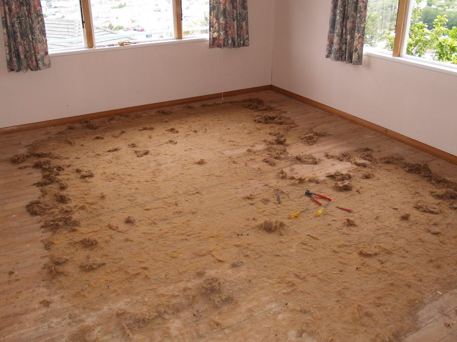
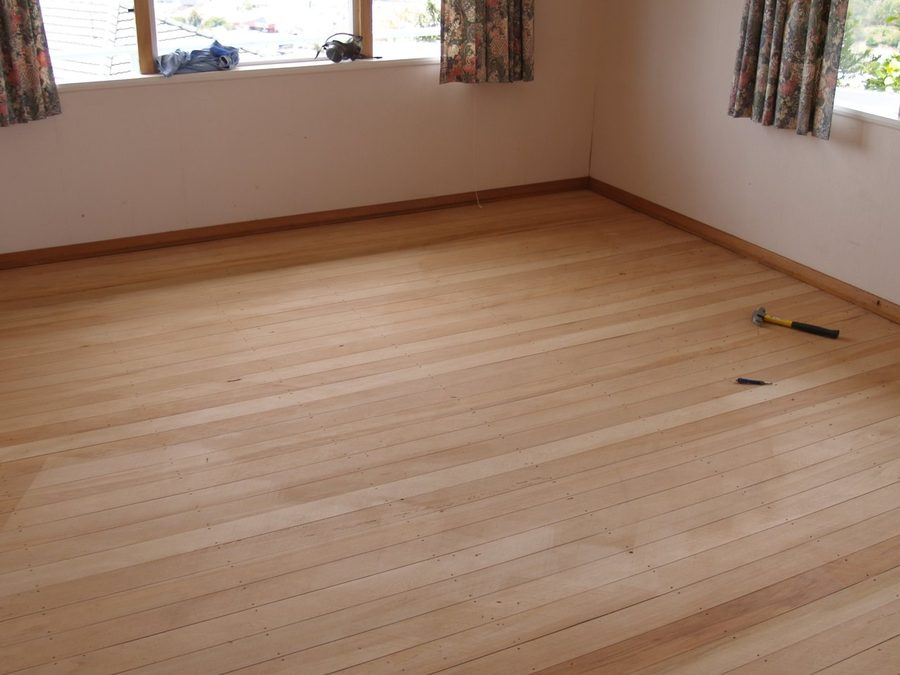
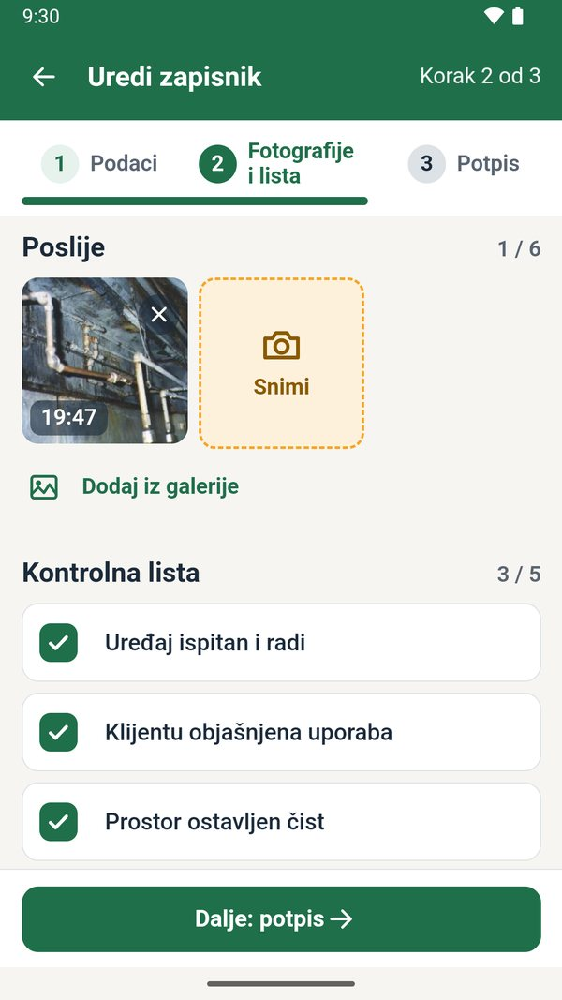
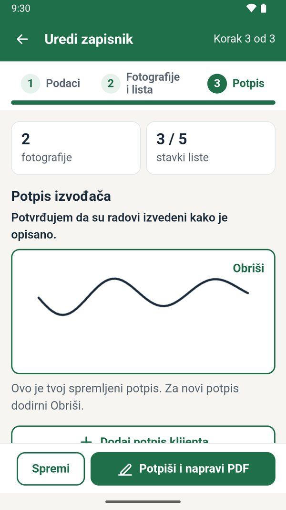

Radni zapisnik s fotografijama, gotov dok si još kod klijenta.
Snimi stanje prije i poslije, označi obavljeno i potpiši. FotoZapisnik složi uredan A4 PDF sa zaglavljem tvog obrta, spreman za WhatsApp, Viber ili e-mail.
- Radi bez interneta
- Bez računa i pretplate
- Podaci ostaju na tvom mobitelu
Android 10 i noviji. Aplikacija je u zatvorenom testiranju na Google Playu.
Slike u galeriji nisu dokaz. Potpisan zapisnik jest.
Kad klijent nakon tri mjeseca kaže da nešto nije bilo napravljeno, rasute fotografije po WhatsAppu ne pomažu. Zapisnik s datumom, vremenom snimanja, kontrolnom listom i tvojim potpisom pokazuje točno što je zatečeno i što je predano.

Prije
PoslijeTri koraka, na licu mjesta
-

Snimi
Narančasta pločica otvara kameru. Do šest fotografija prije i šest poslije, svaka s vremenom i opisom.
-

Označi i potpiši
Prođi kontrolnu listu, pa se potpiši prstom. Potpis se pamti, a klijent se po želji potpiše uz tebe.
-
Pošalji PDF
„Pošalji” odmah otvara WhatsApp, Viber ili e-mail. PDF ostaje spremljen u Preuzimanja/FotoZapisnik.
Ovo dobije klijent
Jedna A4 stranica koja izgleda kao da ju je složila ozbiljna firma, a ne bilješka s mobitela.
- Zaglavlje tvog obrta: naziv, OIB, adresa, telefon i e-mail
- Broj zapisnika, datum i vrijeme rada od–do
- Fotografije prije i poslije s vremenom snimanja
- Kontrolna lista s kvačicama
- Tvoj potpis i, ako želiš, potpis klijenta
Do četiri fotografije sve stane na jednu stranicu. Potpisani zapisnik se više ne mijenja: ispravak nastaje kao nova verzija.
Pogledaj kako izgleda na mobitelu
Kratki video cijelog posla: od podataka o klijentu do PDF-a poslanog na WhatsApp.
Za one koji rade kod klijenta
- Građevina i adaptacije
- Snimi hidroizolaciju, cijevi i instalacije prije nego što se zatvore zidom ili glazurom.
- Klima, grijanje i bojleri
- Fotografija filtera prije i poslije, „uređaj ispitan i radi” i potpis na kraju servisa.
- Voda i struja
- Zatečeno stanje kod hitne intervencije, za klijenta, upravitelja zgrade ili osiguranje.
- Čišćenje i održavanje
- Potvrda nakon svakog dolaska, i kad vlasnik apartmana nije na lokaciji.
- Montaža
- Primopredaja stolarije ili kuhinje bez ogrebotina, potvrđena potpisom.
Tvoji podaci ostaju kod tebe
FotoZapisnik nema dozvolu za pristup internetu. Zapisnici, fotografije i podaci tvojih klijenata spremaju se samo na tvom mobitelu, bez računa, oglasa i praćenja. Prenosiš ih sam, sigurnosnom kopijom u jednu datoteku.
Pravila privatnostiČesta pitanja
Koliko košta?
Dok traje testiranje, aplikacija je besplatna i bez ograničenja. Nakon objave prvih pet zapisnika ostaje besplatno, a za neograničen rad plaćaš samo jednom, bez mjesečne pretplate i bez reklama.
Treba li mi internet na terenu?
Ne. Sve radi i u podrumu, garaži ili novogradnji bez signala. Internet ti treba samo aplikaciji kojom šalješ PDF.
Radi li na iPhoneu?
Za sada ne. FotoZapisnik je za Android 10 i novije.
Gdje nađem PDF nakon slanja?
U mapi Preuzimanja/FotoZapisnik na mobitelu. Isti zapisnik možeš poslati ponovno iz aplikacije kad god zatreba.
Što ako promijenim mobitel?
U Postavkama izradi sigurnosnu kopiju u jednu datoteku i vrati je na novom mobitelu. Kopiju izrađuješ sam: bez nje se zapisnici gube s mobitelom.
Vrijedi li potpis na zaslonu?
Potpis prstom je slika potpisa u zapisniku i služi kao potvrda između tebe i klijenta. Nije kvalificirani elektronički potpis.
Mogu li staviti svoj obrt u zaglavlje?
Da. Naziv obrta, OIB, adresu, telefon, e-mail i potpis upišeš jednom u Postavkama i oni idu na svaki zapisnik.
Isprobaj na idućem poslu
Aplikacija je u zatvorenom testiranju na Google Playu. Javi se i poslat ću ti poveznicu za preuzimanje.
Javi se za rani pristup